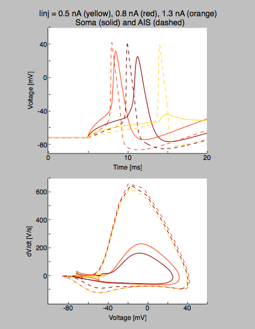

This directory contains source code used in Fig. 3 of the publication Michalikova M, Remme MWH, Kempter R (2016): Spikelets in Pyramidal Neurons: Action Potentials Initiated in the Axon Initial Segment that do not Activate the Soma, PLOS Comp Biol The model was implemented with the Python interface to NEURON. For information on installation and usage, see Hines et al. (2009): Neuron and Python. Frontiers in Neuroinformatics To run this model, either auto-launch from ModelDB or first compile the .mod files (e.g. with "nrnivmodl"), then run in Python the script "main.py" (ipython: "run main.py") The script generates voltage traces and dV/dt as shown in Fig. 3 B and S2 B. 